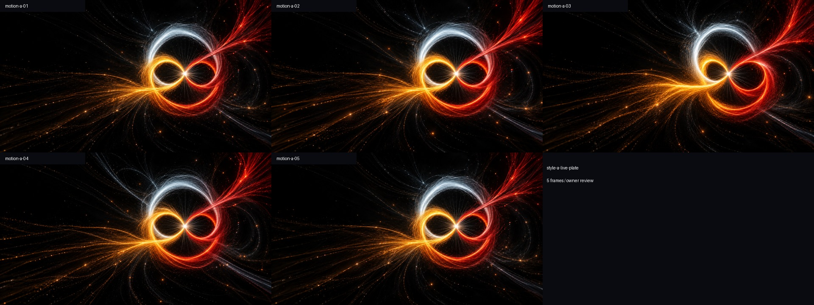
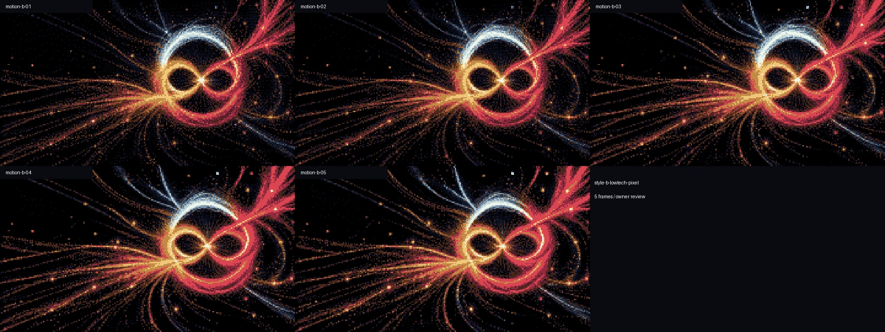
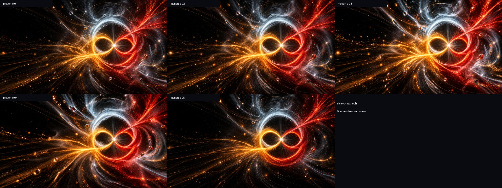

A · Optical drift
Gentle image drift and scale. The cleanest baseline for judging text and foreground forms.
Five review frames

Compare only the background here. These are 20-second HyperFrames studies made from five OpenAI source images per style. No door, runtime particles, dialogue, or reading timer is baked into these videos.
Open playable scene + star controlsGentle image drift and scale. The cleanest baseline for judging text and foreground forms.

A shared 16-color palette and nearest-neighbor pixel conversion of OpenAI originals. This conversion is explicit post-processing, not fresh image generation.

Stronger radial distortion and optical separation. More energetic, but the brightness may compete with the doorway.

These are drifting/warping image plates—not full volumetric 3D travel or AI-generated video. Embedded static stars remain in the source art. Controllable twinkling is a separate Three.js Points system in the playable scene. The Blender asset now contains the door only.
Original study preserved. No style selected automatically, no dialogue changed, nothing committed or pushed.